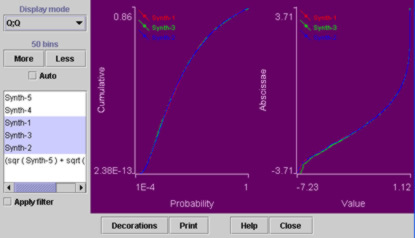

Distogram
Overview
The Distogram plugins can display a variety of distribution
histograms for one or more Measurements.
Values are discretised into a
number of bins, and a graph showing the number of values falling into
each bin is displayed. The plot auto-scales to accomodate the values
currently displayed.
User Interface

The control panel contains (from top to bottom):
-
A label showing how many bins are being used in the discretisation
process. The More and Less buttons below this label
allow you to increase and decrease the number of bins.
-
The Cumulative checkbox toggles between displaying the
distribution(s) in the normal fashion, or as a cumulative graph (in
which each bin is the sum of the spots in that bin, and the of the the
spots in bins to the left of it).
-
One checkbox for each Measurement in the data. The checkbox also
shows which colour has been allocated to that Measurement. Colours are
allocated sequentially using a predefined colour scheme that cannot be
changed. In you really want to change colours, you can use Reorder
Measurements to change which colour gets allocated to which
measurement.
-
Under the list of Measurements are two buttons, All switches
on display of all Measurements, and None switches them all off.
-
Apply filter selects between showing the distribution
all of the data or that of only the data items which pass through the
current Filter(s).